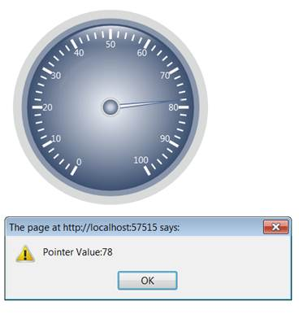
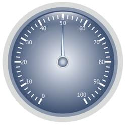

Essential Gauge supports business-oriented gauges, which use pointers and pointer animation to communicate data to the user. Interaction with the gauge can be enabled by setting the EnablePointerInteraction property to True.
|
Property |
Description |
Type of Property |
Value It Accepts |
Any other dependencies/Sub properties associated |
|
EnablePointerInteraction |
To enable interation with Pointer. |
bool |
True
false |
NA |
ClientSide Events:
|
Name |
Description |
Arguments |
|
PointerValueChange |
The event can be triggered while the pointer value is changing during interaction or animation. |
(GaugeObject, PointerValue) |
Step 1:
View:
Add the below code in your Index.aspx file.
In the function OnPointerValueChange(), PointerValueChange event is handled.
|
View[ASPX] <%@ Page Language="C#" MasterPageFile="~/Views/Shared/Site.Master" Inherits="System.Web.Mvc.ViewPage" %>
<asp:Content ID="Content1" ContentPlaceHolderID="TitleContent" runat="server"> Circular Gauge </asp:Content> <asp:Content ID="Content2" ContentPlaceHolderID="MainContent" runat="server">
<%--Rendering the Circular Gauge, which is defined in the PartialView.ascx--%> <% Html.RenderPartial("PartialView"); %>
<script type="text/javascript"> //Handling the PointerValueChange event. function OnPointerValueChange(gauge, value) {
alert("Pointer Value:" + value); } </script> </asp:Content> |
|
View[cshtml] <div> @*--Rendering the Circular Gauge which is defined in the PartialView.ascx--*@ @Html.Partial("PartialView")
<script type="text/javascript"> //Handling the PointerValueChange event. function OnPointerValueChange(gauge, value) {
alert("Pointer Value:" + value); } </script> </div> |
Step 2:
PartialView:
Add the below code in your Partial view.
Interaction can be enabled by setting its EnablePointerInteraction property to True.
|
View[ASPX] <%@ Control Language="C#" Inherits="System.Web.Mvc.ViewUserControl" %>
<%--Rendering the Circular Gauge--%> <%=Html.Syncfusion().CircularGauge("Gauge") .Radius(160).CircularGaugeParams((CircularGaugeParams)ViewData["GaugeParams"]) .FrameType(GaugeFrameType.CircularWithInnerTopGradient) .GaugeSkins(GaugeSkins.VS2010)
.Scales(scale => { scale.Add() .Radius(120) .ScaleBarSize(4.5) .PointerCapRadius(8) .Maximum(100) .Minimum(0) .BackgroundBrush(Brushes.LightGray) .StartAngle(120) .GapSweepAngle(300) .MajorIntervalValue(10) .MinorIntervalValue(2)
.Labels(label => { label.Add() .TickStyle(TickStyle.MajorTick) .TickPlacement(ScalePlacement.Inside) .BackgroundBrush(Brushes.White) .Angle(0) .FontSize(16) .DistanceFromScale(5) .IncludeFirstValue(true);
})
.Ticks(tick => { tick.Add() .TickStyle(TickStyle.MajorTick) .TickWidth(7) .TickHeight(14) .TickPlacement(ScalePlacement.Outside) .TickShape(TickShape.Triangle) .BackgroundBrush(Brushes.White) .Angle(0);
tick.Add() .TickStyle(TickStyle.MinorTick) .TickWidth(2) .TickHeight(9) .TickPlacement(ScalePlacement.Outside) .TickShape(TickShape.Triangle) .BackgroundBrush(Brushes.White) .Angle(0); }) .Ranges(range => { range.Add() .BackgroundBrush(Brushes.White) .BorderBrush(Brushes.LightBlue) .StartValue(55) .EndValue(80) .StartWidth(0) .EndWidth(15) .DistanceFromScale(25) .RangePosition(ScalePlacement.Inside) .BorderWidth(2); }) .Pointers(pointer => { pointer.Add() .PointerLength(90) .PointerWidth(12) //Enabling the Pointer Interaction. .EnablePointerInteraction(true) //Defining the event to be handled after pointer value is changed. //OnPointerValueChange is a function used to handle the PointerValueChange event. .PointerValueChange("OnPointerValueChange") .PointerNeedleType(PointerNeedleType.Needle) .NeedleStyle(NeedleStyle.Triangle) .BorderWidth(2) .Value(20); });
})
%> |
|
View[cshtml] @*--Rendering the Circular Gauge--*@ @{ Html.Syncfusion().CircularGauge("Gauge") .Radius(160).CircularGaugeParams((CircularGaugeParams)ViewData["GaugeParams"]) .FrameType(GaugeFrameType.CircularWithInnerTopGradient) .GaugeSkins(GaugeSkins.VS2010)
.Scales(scale => { scale.Add() .Radius(120) .ScaleBarSize(4.5) .PointerCapRadius(8) .Maximum(100) .Minimum(0) .BackgroundBrush(Brushes.LightGray) .StartAngle(120) .GapSweepAngle(300) .MajorIntervalValue(10) .MinorIntervalValue(2)
.Labels(label => { label.Add() .TickStyle(TickStyle.MajorTick) .TickPlacement(ScalePlacement.Inside) .BackgroundBrush(Brushes.White) .Angle(0) .FontSize(16) .DistanceFromScale(5) .IncludeFirstValue(true); })
.Ticks(tick => { tick.Add() .TickStyle(TickStyle.MajorTick) .TickWidth(7) .TickHeight(14) .TickPlacement(ScalePlacement.Outside) .TickShape(TickShape.Triangle) .BackgroundBrush(Brushes.White) .Angle(0);
tick.Add() .TickStyle(TickStyle.MinorTick) .TickWidth(2) .TickHeight(9) .TickPlacement(ScalePlacement.Outside) .TickShape(TickShape.Triangle) .BackgroundBrush(Brushes.White) .Angle(0); }) .Ranges(range => { range.Add() .BackgroundBrush(Brushes.White) .BorderBrush(Brushes.LightBlue) .StartValue(55) .EndValue(80) .StartWidth(0) .EndWidth(15) .DistanceFromScale(25) .RangePosition(ScalePlacement.Inside) .BorderWidth(2); }) .Pointers(pointer => { pointer.Add() .PointerLength(90) .PointerWidth(12) //Enabling the Pointer Interaction. .EnablePointerInteraction(true) //Defining the event to be handled after pointer value is changed. //OnPointerValueChange is a function used to handle the PointerValueChange event. .PointerValueChange("OnPointerValueChange") .PointerNeedleType(PointerNeedleType.Needle) .NeedleStyle(NeedleStyle.Triangle) .BorderWidth(2) .Value(20); }); }) .Render(); } |
Step 3:
Controller:
Add the below code in your controller. Using the CircularGaugeParams class, you can get the Post parameter values for the Interaction.
|
using System; using System.Collections.Generic; using System.Linq; using System.Web; using System.Web.Mvc; using Syncfusion.Mvc.Gauge; using Syncfusion.Mvc.Shared; using System.Windows.Media;
namespace CircularGauge.Controllers { [HandleError] public class HomeController : Controller { public ActionResult Index() { return View(); }
[AcceptVerbs(HttpVerbs.Post)] public ActionResult Index(CircularGaugeParams param) { //Passing the CircularGaugeParams values to the view. ViewData["GaugeParams"] = param; return PartialView("PartialView", this.ViewData); } } } |
Step 3:
Run the code. You will get the below Output.
Figure 77: Circular Gauge-Before Interaction
Step 4:
Click inside the Gauge to interact with pointer. Then you will get the below output.

Figure 78: Circular Gauge-After Interaction
Step 1:
View:
Add the below code in your aspx file.
|
View[ASPX] <%@ Page Language="C#" MasterPageFile="~/Views/Shared/Site.Master" Inherits="System.Web.Mvc.ViewPage" %>
<asp:Content ID="Content1" ContentPlaceHolderID="TitleContent" runat="server"> Circular Gauge </asp:Content> <asp:Content ID="Content2" ContentPlaceHolderID="MainContent" runat="server"> <%--Rendering the Circular Gauge, which is defined in the PartialView.ascx--%>
<%=Html.Syncfusion().CircularGauge("Gauge", (CircularGaugeModel)ViewData["GaugeModel"])%>
<script type="text/javascript">
//Handling the PointerValueChange event. function OnPointerValueChange(gauge, value) {
alert("Pointer Value:" + value); } </script> </asp:Content> |
|
View[cshtml] <div> @*--Rendering the Circular Gaug,e which is defined in the PartialView.ascx--*@ @Html.Syncfusion().CircularGauge("Gauge",(CircularGaugeModel)ViewData["GaugeModel"])
<script type="text/javascript">
//Handling the PointerValueChange event. function OnPointerValueChange(gauge, value) {
alert("Pointer Value:" + value); } </script> </div> |
Step 2:
Controller:
Add the below code in your controller. In the RenderCircularGauge() function, CircularGauge is created.
|
using System; using System.Collections.Generic; using System.Linq; using System.Web; using System.Web.Mvc; using Syncfusion.Mvc.Gauge; using Syncfusion.Mvc.Shared; using System.Windows.Media;
namespace CircularGauge.Controllers { [HandleError] public class HomeController : Controller { public ActionResult Index() { CircularGaugeModel gauge = RenderCircularGauge(); ViewData["GaugeModel"] = gauge; return View(); }
[AcceptVerbs(HttpVerbs.Post)] public ActionResult Index(CircularGaugeParams param) { if (param.GaugeAction == GaugeAction.Interaction) { CircularGaugeModel c_model = RenderCircularGauge(); //If gauge action is Interaction or Animation, then you have to pass the circular gauge post parameter values to //CircularGaugeActionResult class. return c_model.CircularGaugeActionResult(param); } else return View(); }
CircularGaugeModel RenderCircularGauge() { CircularGaugeModel gauge = new CircularGaugeModel(); gauge.Radius = 160; gauge.GaugeSkins = GaugeSkins.VS2010; CircularScale c_Scale = new CircularScale(); c_Scale.Maximum = 100; c_Scale.Minimum = 0; c_Scale.MinorIntervalValue = 2; c_Scale.MajorIntervalValue = 10; c_Scale.GapSweepAngle = 300; c_Scale.Radius = 120; c_Scale.StartAngle = 120;
GaugeLabelTick c_LabelTick = new GaugeLabelTick(); c_LabelTick.TickStyle = TickStyle.MajorTick; c_LabelTick.FontSize = 15; c_LabelTick.DistanceFromScale = 8; c_LabelTick.TickPlacement = ScalePlacement.Inside; c_LabelTick.Angle = 0;
TickMark _minor = new TickMark(); _minor.TickStyle = TickStyle.MinorTick; _minor.TickWidth = 1; _minor.TickHeight = 9;
TickMark _major = new TickMark(); _major.TickStyle = TickStyle.MajorTick; _major.TickWidth = 3; _major.TickPlacement = ScalePlacement.Cross; _major.Angle = 180;
CircularPointer c_Pointer = new CircularPointer(); c_Pointer.PointerPlacement = ScalePlacement.Inside; c_Pointer.Value = 50; c_Pointer.EnablePointerInteraction = true; c_Pointer.PointerValueChange = "OnPointerValueChange"; c_Scale.Ticks.Add(_minor); c_Scale.Ticks.Add(_major); c_Scale.Pointers.Add(c_Pointer); c_Scale.Labels.Add(c_LabelTick); gauge.Scales.Add(c_Scale);
return gauge; } } } |
Step 3:
Run the code. You will get the following output.

Figure 79: Circular Gauge-Before Interaction
Step 4:
Click inside the Gauge to interact with pointer. Then you will get the below output.
Figure 80: Circular Gauge-After Interaction